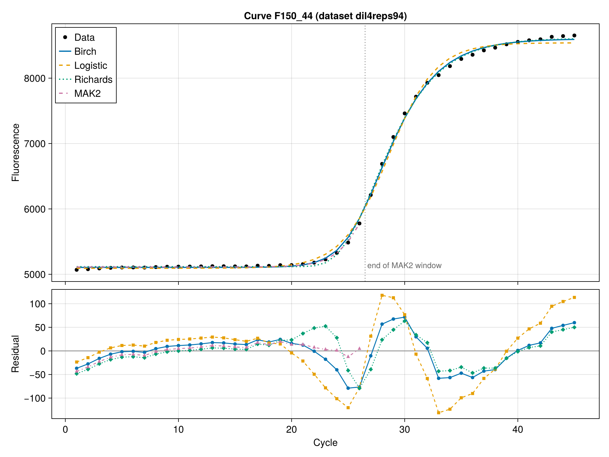
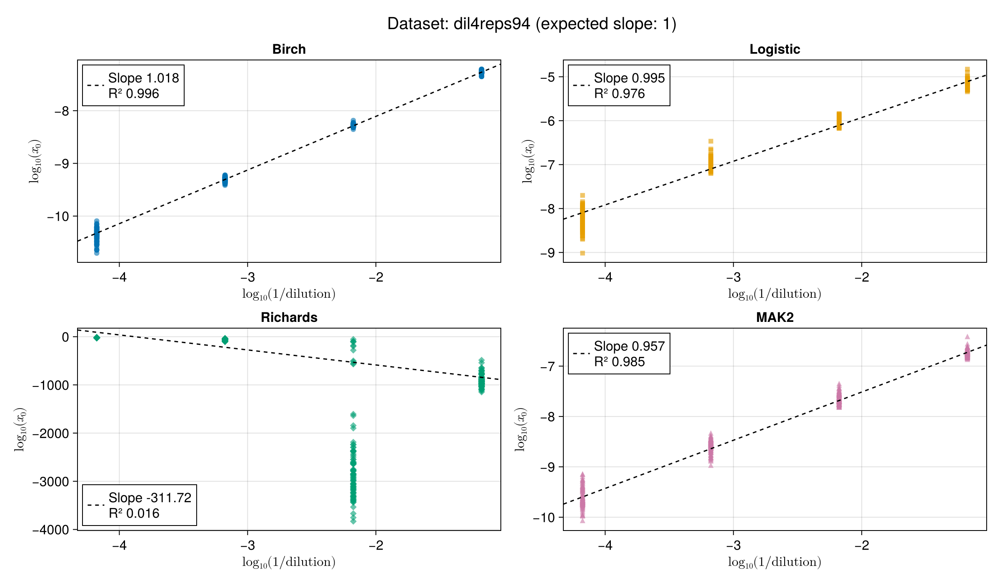
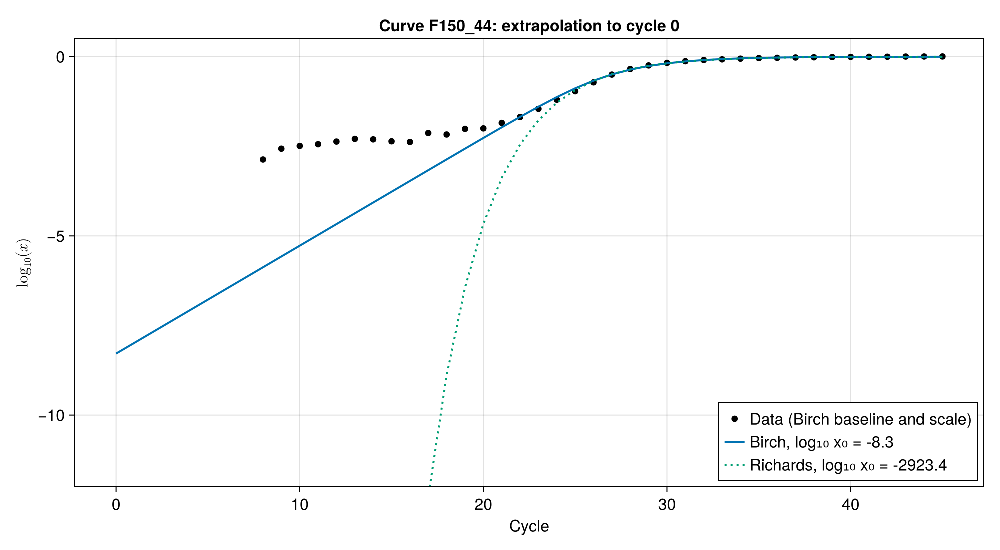

The Birch model
Why the Birch model?
Mechanistic models such as MAK2 (Boggy & Woolf, PLoS ONE 2010) estimate the initial target quantity directly from reaction kinetics, with no standard curve and no efficiency assumption from a threshold. However, MAK2 describes only the start of the reaction, so it must be truncated near the second-derivative maximum and ignores most of the data. Empirical sigmoids (4PL/5PL) fit the whole curve, but their parameters have no physical meaning, so $x_0$ cannot be read from them in a principled way.
The Birch model has the strengths of both:
- it is derived from the PCR reaction scheme (primer annealing competing with template re-annealing), so its parameters have a physical meaning;
- it describes the whole curve, from the exponential phase through the slowdown and up to the plateau, so every cycle informs the fit;
- it needs just two non-linear parameters ($b$ and $t_m$). This is the same number as the 4PL, and one fewer than the 5PL, yet the curve can still be asymmetric.
Derivation of the Birch model
Reaction scheme
| Symbol | Species |
|---|---|
| $A$ | single-stranded target DNA (ssDNA, after denaturation) |
| $B$ | primer |
| $S$ | primed template (ssDNA + annealed primer) |
| $P$ | double-stranded DNA (dsDNA), which is the fluorescent product |
| $E$ | polymerase |
During the annealing/extension step of each cycle, every single strand $A$ has two possible fates:
- Productive annealing then extension: $A + B \to S$, then $S + E \to ES \to P + E$. The strand is copied, so one new strand is created (and one primer is used up).
- Non-productive re-annealing: $A + A \to P$. The strand re-hybridises with its complementary strand, no copy is made, and no primer is used.
Hypotheses
H1 – Non-limiting polymerase. $E$ is in excess and extension is fast compared with annealing. $S$ is therefore in quasi-steady state ($d[S]/dt \approx 0$) and every primed template is extended within the cycle. Annealing and extension can be lumped into a single step.
H2 – Complete denaturation. At the start of each cycle, all target DNA is single-stranded: $[A] = n$, where $n$ is the number of target strands.
H3 – Primers are the limiting resource. Each new strand uses one primer, so $[B] = B_0 - (n - n_0)$. Defining the carrying capacity
\[K = B_0 + n_0\]
the free primer pool is simply $[B] = K - n$. The plateau is reached when the primers are exhausted ($n \to K$).
H4 – Kinetic partition. Within an annealing step, a strand's fate is set by the ratio of the two competing rates. These rates are evaluated with the concentrations at the start of the step:
\[\text{primer annealing: } k_1 [A][B], \qquad \text{re-annealing: } k_2 [A]^2.\]
The fraction of strands that get copied, i.e. the per-cycle efficiency, is therefore
\[\varphi(n) = \frac{k_1 [A][B]}{k_1 [A][B] + k_2 [A]^2} = \frac{k_1 (K - n)}{k_1 (K - n) + k_2 n}.\]
H5 – Continuous-cycle approximation. The cycle number $c$ is treated as continuous. The mechanistic per-cycle update $n_{c+1} = (1 + E_\mathrm{max} \varphi) n_c$ is replaced by $d \ln n / dc = a \varphi$, where $a = \ln(1 + E_\mathrm{max})$. This package assumes perfect doubling at low template ($E_\mathrm{max} = 1$, $a = \ln 2$), as MAK2 does. See Discrete cycles vs continuous time for what this approximation does and does not change.
H6 – Fluorescence is proportional to product. After extension, every strand (copied or re-annealed) sits in a duplex, so $[P] \propto n$ and $F = F_\mathrm{bg} + F_\mathrm{max} n/K$.
From the scheme to the ODE
Combining H4 and H5:
\[\frac{dn}{dc} = a n \varphi(n) = \frac{a k_1 n (K - n)}{k_1 K + (k_2 - k_1) n}.\]
Dividing the numerator and denominator by $k_1$ and setting
\[b = \frac{k_2}{k_1} - 1\]
gives the Birch growth equation (Birch, Ann. Bot. 1999):
\[\boxed{\frac{dn}{dc} = \frac{a n (K - n)}{K + b n}}\]
or, for the normalised quantity $x = n/K \in (0, 1)$,
\[\frac{dx}{dc} = \frac{a x (1 - x)}{1 + b x}.\]
Discrete cycles vs continuous time
PCR runs in discrete cycles, but the Birch model is an ODE. The ODE is autonomous: its right-hand side depends on $n$ only, not on $c$. Two consequences follow:
- No discretisation error. Sampled at whole cycles, the ODE solution follows exactly a recursion $x_{c+1} = \Phi(x_c)$, where $\Phi$ is the solution map over one cycle. $\Phi$ is the same for every cycle, so fitting the continuous solution at integer cycles is fitting a genuine cycle-to-cycle model with constant reaction conditions.
- Changing $a$ only rescales time. At low template, $\Phi(x) \to (1 + E_\mathrm{max}) x$ exactly, so $a = \ln(1 + E_\mathrm{max})$ reproduces the per-cycle efficiency of the exponential phase with no approximation.
However, $\Phi$ is not the mechanistic update $x + E_\mathrm{max} \varphi(x) x$, and no time rescaling can make the two equal, because the required factor changes along the curve. For the logistic case ($b = 0$, $a = \ln 2$), $\Phi(x) = 2x/(1 + x)$ (the Beverton–Holt map). Its per-cycle efficiency is $(1 - x)/(1 + x)$, compared with $\varphi = 1 - x$ from the kinetic partition (1/3 vs 1/2 at half-plateau). The two agree exactly at the start (efficiency $E_\mathrm{max}$) and at the plateau (efficiency 0), and differ in between.
The rate must set the time scale. The same reasoning explains how MAK2Model is implemented. Instead of iterating the MAK2 recursion $x_{c+1} = x_c + \ln(1 + x_c)$, it uses the implicit solution of the ODE $dx/dc = \ln 2 \cdot \ln(1 + x)$, which is convenient for sensitivity analysis. Writing $z = \ln(1 + x)$, that solution is $\mathrm{Ei}(z) - \mathrm{Ei}(z_0) = c \ln 2$. The $\ln 2$ factor matters. Without it, the ODE grows by a factor $e$ per cycle in the exponential phase instead of 2. The fitted $x_0$ then scales as $x_0^{1/\ln 2} \approx x_0^{1.44}$, which distorts fold changes, and it is a power law, not a constant rescaling. With it, the ODE and the recursion agree in the exponential phase, and $x_0$ differs from the recursion estimate only by a constant factor ($\approx 0.55$), which cancels in fold changes.
The Birch curve is therefore an exact, cycle-invariant model in its own right. The approximation lies only in its mechanistic reading: $b = k_2/k_1 - 1$ is a faithful summary of the competition between primer annealing and re-annealing, not an exact estimate of the rate-constant ratio.
What the parameters mean
- $K = B_0 + n_0$: the plateau, set by the primer supply. Since the model is fitted on $x = n/K$ and the fluorescence scale is a linear parameter, $K$ never has to be known.
- $a = \ln(1 + E_\mathrm{max})$: the growth rate in early cycles, fixed to $\ln 2$. It sets the time scale and makes the early per-cycle growth exactly $1 + E_\mathrm{max}$.
- $b = k_2/k_1 - 1 \gt -1$: the competition parameter, which compares re-annealing with primer annealing. Because $k_2 \ge 0$, $b \gt -1$; the code enforces this through $b = e^{p} - 1$.
- $b \to -1$ (no re-annealing): $dx/dc = a x$. The curve is purely exponential until the primers run out, then breaks sharply into the plateau.
- $b = 0$ ($k_1 = k_2$): the classical logistic model, a symmetric sigmoid.
- $b \gt 0$ (re-annealing is faster than priming): as product builds up, re-annealing increasingly wins over priming. Efficiency drops before primers are exhausted, which gives the long, asymmetric approach to the plateau seen in real qPCR curves.
The $b x$ term in the denominator is a density-dependent inhibition. It is the mechanistic counterpart of the empirical asymmetry factor $\nu$ in the Richards model.
Closed-form (implicit) solution
The variables separate. With the partial fractions
\[\frac{1 + b x}{x (1 - x)} = \frac{1}{x} + \frac{1 + b}{1 - x}\]
integration gives
\[\ln x - (1 + b) \ln(1 - x) = a c + C.\]
The constant is fixed by $x(t_m) = 1/2$, so that $t_m$ is the half-amplification cycle. With $a = \ln 2$, this is the equation solved for each cycle in src/models.jl:
\[\ln x - (1 + b) \ln(1 - x) = (c - t_m + b) \ln 2.\]
For each cycle, the equation is solved for $\ln x$ with a safeguarded Newton solver (newtsafe_rootfinding). Working on the log scale keeps early cycles accurate even when $x$ is below $10^{-15}$. The Jacobian comes from implicit differentiation of the same relation.
Derived quantities
- Initial quantity $x_0 = n_0/K$, obtained by solving the implicit equation at $c = 0$ (
get_x0,get_logx0). It is the ratio of initial template strands to the total primer + template pool, and it is directly comparable between wells that share the same master mix. - Inflection point: $x_i = 1/\left(1 + \sqrt{1 + b}\right)$. This is $1/2$ for the logistic case and lower for $b \gt 0$.
- Cy₀ (Guescini et al., BMC Bioinformatics 2008): the intersection of the tangent at the inflection point with the baseline (
get_cy0).
Comparison on real data
The figures below use the dil4reps94 dataset: four 10-fold dilutions with 94 replicates each. They are made by examples/figures.jl.
Fit of one typical curve
All four models fitted to the same curve. MAK2 is fitted only up to the second-derivative maximum (dotted line). The 4PL logistic curve is symmetric, so it cannot follow both the sharp take-off and the slow approach to the plateau; this gives the large wave in its residuals. The Birch model fits the whole curve as well as the 5PL Richards curve, with one non-linear parameter fewer.

Accuracy of the initial quantity
If $x_0$ is estimated correctly, $\log_{10} x_0$ against $\log_{10}$ of the relative template amount is a straight line with slope 1. Each panel shows the robust standard curve fitted by calibration.

- Birch gives the slope closest to 1 and the smallest spread between replicates.
- Logistic gives a slope close to 1, but with a much larger spread, especially at the lowest template amount.
- MAK2 uses only the start of the curve, so its estimates are noisier.
- Richards cannot be used to estimate $x_0$: its values are meaningless (see below).
Why the Richards model fails
The Birch and Richards (5PL) curves both add one shape parameter to the logistic curve, but in different ways (Birch 1999 compares the two equations). The Richards curve used here, $x = \left(1 + e^{-a(c - t_m)}\right)^{-1/\nu}$ with $\nu \gt 0$, solves
\[\frac{dx}{dc} = \frac{a}{\nu} x (1 - x^\nu).\]
The early growth rate is free. At low template, the Richards growth rate per cycle is $d \ln x / dc \to a/\nu$. The data cannot fix this rate, because the exponential phase is hidden in the baseline noise. But $\nu$ also sets the shape of the visible part of the curve, so the fit chooses $\nu$ for the visible part only. On dil4reps94, the fits push $\nu$ towards 0 (median 0.03), which gives a median $a/\nu$ of 11.5: a $10^5$-fold increase per cycle instead of the 2-fold of PCR. Extrapolating back to cycle 0 at that rate gives a median $\log_{10} x_0$ of −100, and values below −3000.
In the Birch model, $d \ln x / dc \to a = \ln 2$ for any $b$. The exponential phase is perfect doubling by construction, so going back to cycle 0 only counts doublings, and $b$ only shapes the slowdown towards the plateau.

On a log scale, the Birch curve is a straight line with slope $\log_{10} 2$ per cycle until the slowdown; the Richards curve falls almost vertically below the measured range. The data are shown with the Birch baseline and scale; below about 1% of the plateau the signal is lost in the baseline noise.
The inflection point is restricted. The Richards inflection point is at $x_i = (1 + \nu)^{-1/\nu}$. For $\nu \gt 0$ it is always above $1/e \approx 0.37$ of the plateau. The Birch inflection point, $x_i = 1/\left(1 + \sqrt{1 + b}\right)$, can be anywhere in $(0, 1)$. (On dil4reps94 the Birch inflection is at 0.41–0.44 of the plateau, inside the Richards range, so this limit is not the cause of the failure there.)
The limit $\nu \to 0$ is the Gompertz curve, $dx/dc = -a x \ln x$, with its inflection point at exactly $1/e$. Its growth rate per cycle, $-a \ln x$, has no upper bound as $x \to 0$: at low template the curve grows faster than any exponential. The cycle where it reaches half of the plateau depends on $\ln \ln (1/x_0)$ instead of $\ln x_0$: with $a = 0.3$, a 10-fold dilution delays it by only 0.4–0.5 cycle instead of $\log_2 10 \approx 3.3$ cycles. Most Richards fits on dil4reps94 are close to this limit.
Below $1/e$, amplification without template. The Richards family can put the inflection point below $1/e$ only with $-1 \lt \nu \lt 0$ (not allowed in RichardsModel). Near $x = 0$, the growth rate then behaves as $x^{1 + \nu}$, with an exponent below 1. So a curve starting from $x = 0$ does not have to stay at 0: the model allows amplification without any template, in a finite number of cycles. The Birch model never does this: its growth rate $a x (1 - x)/(1 + b x)$ is proportional to $x$ near 0, for any inflection point.
References
- Birch, C. P. D. (1999). A new generalized logistic sigmoid growth equation compared with the Richards growth equation. Annals of Botany 83, 713–723.
- Boggy, G. J. & Woolf, P. J. (2010). A mechanistic model of PCR for accurate quantification of quantitative PCR data. PLoS ONE 5, e12355.
- Guescini, M. et al. (2008). A new real-time PCR method to overcome significant quantitative inaccuracy due to slight amplification inhibition. BMC Bioinformatics 9, 326.
- Ritz, C. & Spiess, A.-N. (2008). qpcR: an R package for sigmoidal model selection in quantitative real-time polymerase chain reaction analysis. Bioinformatics 24, 1549–1551.